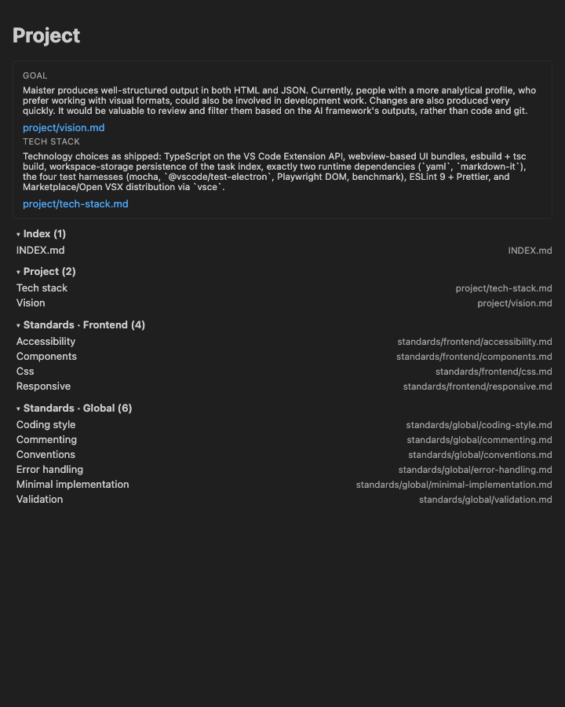
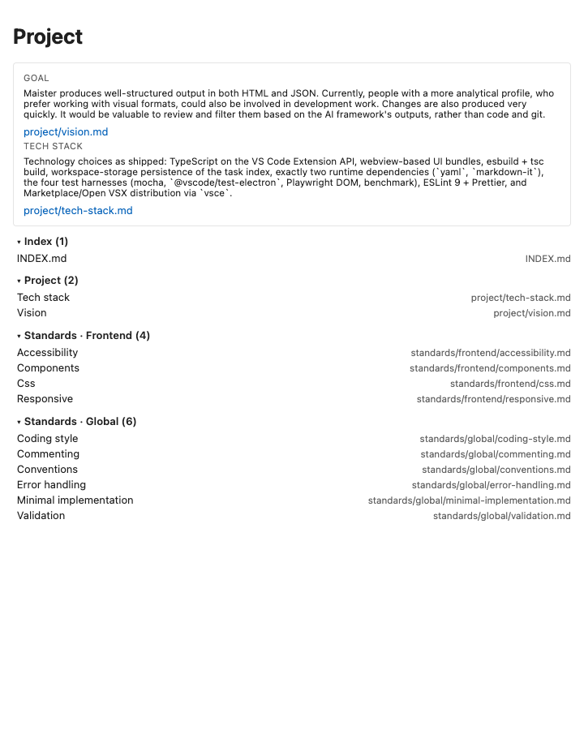
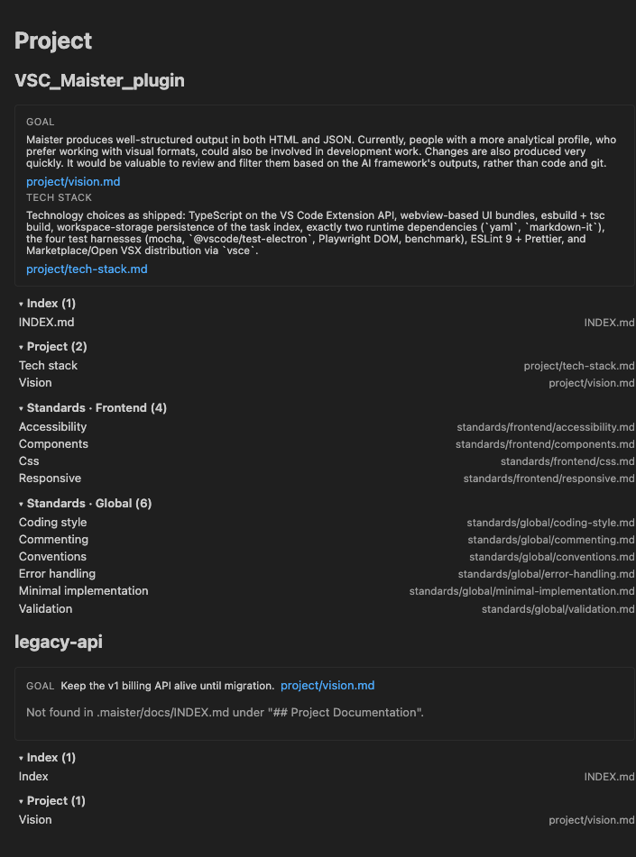
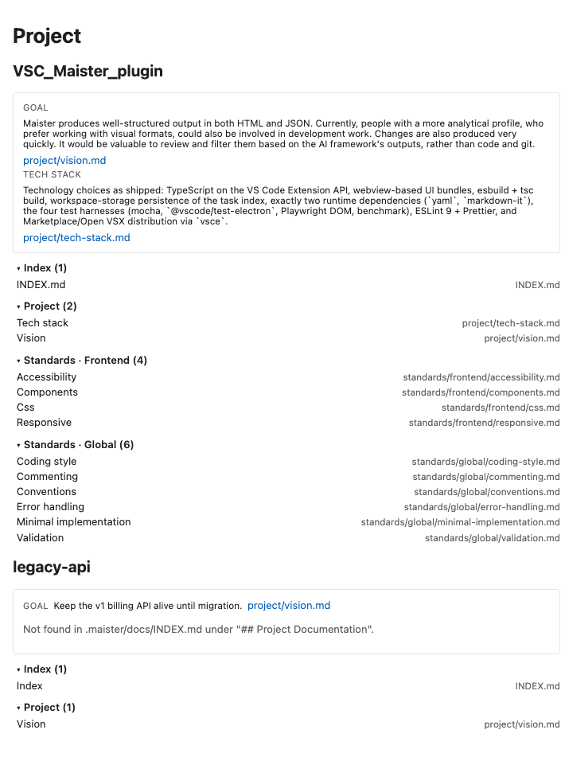
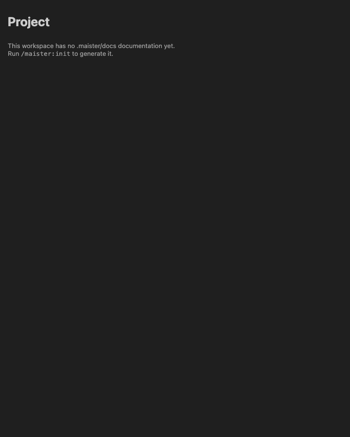
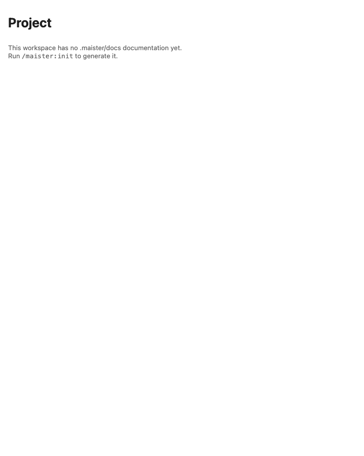
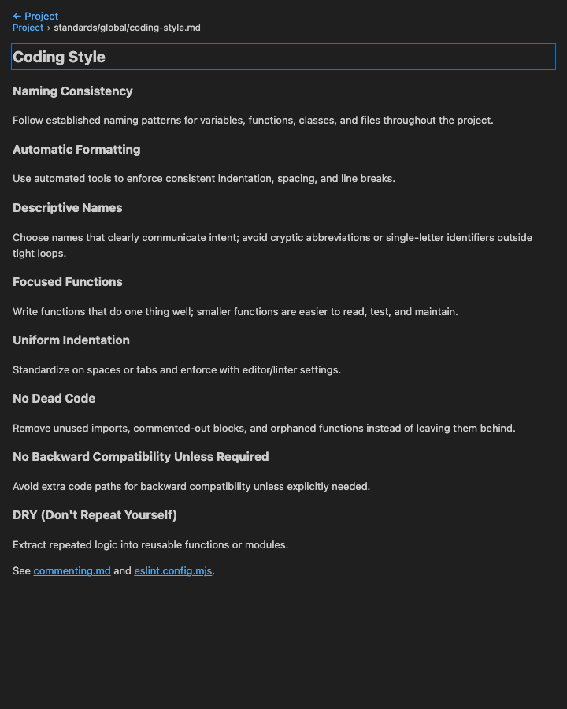
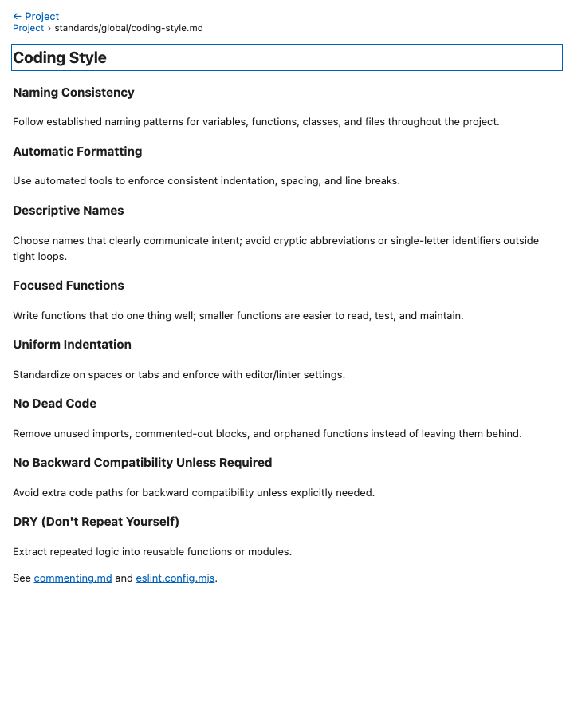
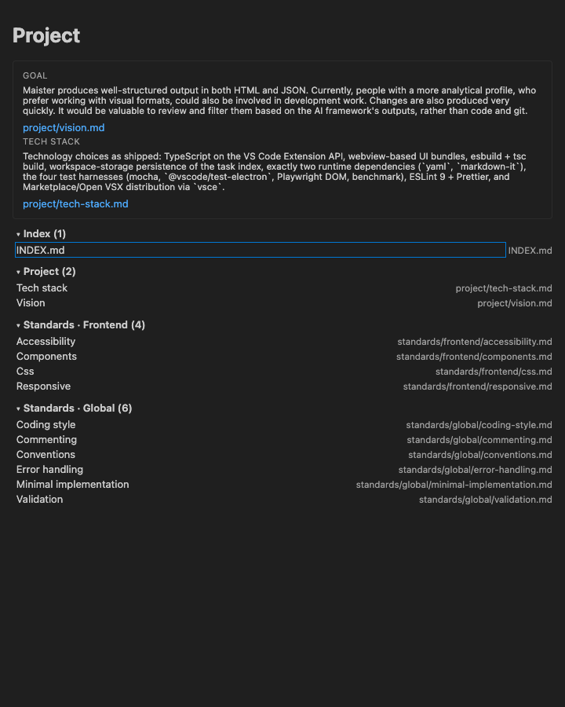

GO WITH CAVEATS. 7 of 7 executed scenarios passed. 3 had minor issues, and there were no console errors. All the requested behaviour works: the TL;DR is shown verbatim with no chips, groups come in order, rows post openDoc, the multi-root layout and the missing note appear, the empty state shows the /maister:init hint, and the reader shows "← Project" and a breadcrumb that both post openProject, with no Source button. The caveats are cosmetic or minor. The tech-stack text shows raw Markdown backticks, css.md is labelled "Css", and the partial-TL;DR note does not say which field is missing.
media/webview.css and dist/webview/*.js files, with acquireVsCodeApi stubbed and loaded over file://. harness.ts has no server and no theme support, so --vscode-* token values for the light and dark themes were injected by the test setup..maister/docs. The parseProjectIndex, parseVisionGoal and groupDocs functions were run on this repo's INDEX.md and vision.md, and the reader body was rendered from standards/global/coding-style.md with markdown-it. Two data-artifact and data-file links were appended from the harness fixture.| Field | Value |
|---|---|
| Base URL | file:// shell pages (no server; harness-equivalent), bundles from dist/webview/ after npm run build |
| Browser | Chromium (Playwright MCP) |
| Viewport | 720×900 |
| Auth context | anonymous (webview; acquireVsCodeApi stub) |
| Test data | live repo .maister/docs + one synthetic second root (legacy-api) |
Verdict: ⚠️ GO WITH CAVEATS
| Metric | Count |
|---|---|
| Scenarios planned | 8 |
| Scenarios executed | 7 |
| Passed | 7 |
| Failed | 0 |
| Blocked | 0 |
| Pass rate | 100% |
| Critical issues | 0 |
| Major issues | 0 |
| Minor issues | 2 |
| Cosmetic issues | 1 |
The Project bundle and the doc-mode reader behave as the spec requires with real content. Every control posts the right message with the right payload. The keyboard order follows the reading order, and both themes render legibly. One planned scenario, the sidebar nav node, was not run in the browser because it is a native TreeView. The only findings are about presentation: the verbatim text keeps its Markdown backticks, one label is humanized oddly, and the partial-TL;DR note is vague.
| # | Action | Expected | Actual | Status |
|---|---|---|---|---|
| 1 | Post projectMode payload | H1 "Project", TL;DR card | H1 Project, .project-tldr with GOAL + TECH STACK |
✅ |
| 2 | Read goal text | First paragraph of the vision.md Problem Statement, verbatim | Identical text ("Maister produces well-structured output…rather than code and git.") | ✅ |
| 3 | Read tech-stack text | The INDEX.md Tech Stack paragraph, verbatim, no chips | Identical text; 0 chip elements | ✅ |
| 4 | Group order | Index, Project, Standards · Frontend, Standards · Global | Index (1), Project (2), Standards · Frontend (4), Standards · Global (6) | ✅ |
| 5 | Row labels | Humanized names | "Coding style", "Error handling", "Minimal implementation"…; css.md becomes "Css" |
⚠️ |
| 6 | Source links | project/vision.md, project/tech-stack.md | Both present as .link buttons |
✅ |
| # | Action | Expected | Actual | Status |
|---|---|---|---|---|
| 1 | Press Enter on the focused "INDEX.md" row | openDoc{docsFolderUri, docRelPath:"INDEX.md"} |
Posted exactly | ✅ |
| 2 | Click the "Coding style" row | openDoc standards/global/coding-style.md |
Posted exactly | ✅ |
| 3 | Click the goal source link | openDoc project/vision.md |
Posted exactly | ✅ |
openDoc with the section's workspace-folder URIlegacy-api) has a goal but no tech stack| # | Action | Expected | Actual | Status |
|---|---|---|---|---|
| 1 | Post the multi-root payload | One H2 per folder | H2 "VSC_Maister_plugin", H2 "legacy-api" | ✅ |
| 2 | Inspect the partial card | Shows what was found, plus the "missing" note | Goal shown; note "Not found in .maister/docs/INDEX.md under "## Project Documentation"." | ⚠️ |
| 3 | Click "Vision" in the second root | openDoc carries file:///ws/legacy-api |
Posted with the correct root | ✅ |
{empty:true, sections:[]}| # | Action | Expected | Actual | Status |
|---|---|---|---|---|
| 1 | Post the empty payload | .empty with the /maister:init hint |
"This workspace has no .maister/docs documentation yet. Run /maister:init to generate it." in role=status |
✅ |
standards/global/coding-style.md rendered from the real file| # | Action | Expected | Actual | Status |
|---|---|---|---|---|
| 1 | Render | "← Project", then "Project › path" | "← Project"; nav aria-label="Project › standards/global/coding-style.md" |
✅ |
| 2 | Click "← Project" | openProject |
Posted | ✅ |
| 3 | Click the "Project" crumb | openProject |
Posted | ✅ |
| 4 | Look for a Source button | None | 0 controls matching /source/i | ✅ |
| 5 | Click the commenting.md#rules link |
openDoc with anchor:"rules" |
Posted exactly | ✅ |
| 6 | Click eslint.config.mjs |
openFile |
openFile{workspaceRelPath} |
✅ |
openProjectopenSource, openArtifact or openTask posted| # | Action | Expected | Actual | Status |
|---|---|---|---|---|
| 1 | Tab on the Project page | Reading order | vision.md → tech-stack.md → Index (1) → INDEX.md → Project (2) → Tech stack → Vision → Standards · Frontend (4) | ✅ |
| 2 | Tab in the reader | Reading order | Skip to document → ← Project → Project → commenting.md → eslint.config.mjs | ✅ |
| 3 | Tab on the empty page | No stray controls | Focus stays on the document (there are no controls) | ✅ |
--vscode-* tokens)vscode-dark and vscode-light| # | Action | Expected | Actual | Status |
|---|---|---|---|---|
| 1 | Render all 4 surfaces in both themes | Legible, no hard-coded colours | All 8 renders are legible | ✅ |
None observed.
None observed.
#2 css.md is humanized as "Css"
humanizeDocName sentence-cases every name and has no acronym handling#3 The partial-TL;DR note does not say which field is missing
PROJECT.missing string is used for any absent field#1 Raw Markdown backticks in the tech-stack text
(`yaml`, `markdown-it`) and `vsce`None observed. No console errors and no page errors appeared on any of the 8 renders. The only errors were in the mockup pages' own design-studio websocket, not in the product.
openDoc anchor split, openFile for non-docs files)aria-expanded), matching the mockup annotationnavTree.ts returns [DASHBOARD_NODE, PROJECT_NODE] with ThemeIcon('book') and the maister.openProject command, and that package.json hides maister.openProject with "when": "false".| Criterion (from spec) | Status | Evidence |
|---|---|---|
| Project page shows goal and stack text from this repo | ✅ | 4.1 |
Every .maister/docs/**/*.md appears once, in group order, and opens with a working "← Project" |
✅ | 4.1, 4.2, 4.5 |
| Links between docs open rendered; other links open in the editor | ✅ | 4.5 steps 5–6 (client side) |
| openDoc rejects foreign roots or traversal | ⚠️ | Host-side; not browser-testable (unit tests) |
| Live refresh keeps scroll | ⚠️ | Not browser-testable (integration tests) |
verification/screenshots/ (13 files: 8 surface renders, 1 focus, 4 mockup captures)verification/visual-fidelity.mdThe verdict is ⚠️ GO WITH CAVEATS. Every browser-verifiable requirement passed with real repo content, and there were no console errors. The remaining items are presentational polish. The recommendation is to merge, and optionally to reword the partial missing note first.








